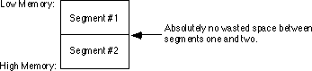
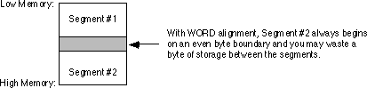
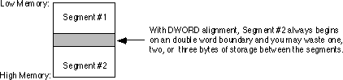
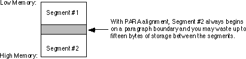
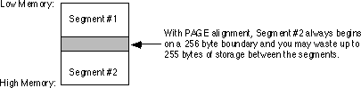
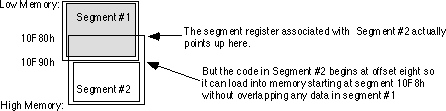

|
Table of Content | Chapter Eight (Part 3) |
|
Table of Content | Chapter Eight (Part 3) |
| CHAPTER
EIGHT: MASM: DIRECTIVES & PSEUDO-OPCODES (Part 2) |
|
| 8.8 -
Segments 8.8.1 - Segment Names 8.8.2 - Segment Loading Order |
8.8.3 -
Segment Operands 8.8.3.1 - The ALIGN Type 8.8.3.2 - The COMBINE Type |
| 8.8 Segments | |
All programs consist of one or more segments. Of course,
while your program is running, the 80x86's segment registers point at the currently active
segments. On 80286 and earlier processors, you can have up to four active segments at once
(code, data, extra, and stack); on the 80386 and later processors, there are two
additional segment registers: fs and gs. Although you cannot
access data in more than four or six segments at any one given instant, you can modify the
80x86's segment registers and point them at other segments in memory under program
control. This means that a program can access more than four or six segments. The question
is "how do you create these different segments in a program and how do you access
them at run-time?"
Segments, in your assembly language source file, are
defined with the segment and ends directives. You can put as
many segments as you like in your program. Well, actually you are limited to 65,536
different segments by the 80x86 processors and MASM probably doesn't even allow that many,
but you will probably never exceed the number of segments MASM allows you to put in your
program.
When MS-DOS begins execution of your program, it
initializes two segment registers. It points cs at the segment containing
your main program and it points ss at your stack segment. From that point
forward, you are responsible for maintaining the segment registers yourself.
To access data in some particular segment, an 80x86 segment register must contain the address of that segment. If you access data in several different segments, your program will have to load a segment register with that segment's address before accessing it. If you are frequently accessing data in different segments, you will spend considerable time reloading segment registers. Fortunately, most programs exhibit locality of reference when accessing data. This means that a piece of code will likely access the same group of variables many times during a given time period. It is easy to organize your programs so that variables you often access together appear in the same segment. By arranging your programs in this manner, you can minimize the number of times you need to reload the segment registers. In this sense, a segment is nothing more than a cache of often accessed data.
In real mode, a segment can be up to 64 Kilobytes long. Most pure assembly language programs use less than 64K code, 64K global data, and 64K stack space. Therefore, you can often get by with no more than three or four segments in your programs. In fact, the SHELL.ASM file (containing the skeletal assembly language program) only defines four segments and you will generally only use three of them. If you use the SHELL.ASM file as the basis for your programs, you will rarely need to worry about segmentation on the 80x86. On the other hand, if you want to write complex 80x86 programs, you will need to understand segmentation.
A segment in your file should take the following form:
segmentname segment {READONLY} {align} {combine} {use} {'class'}
<statements>
segmentname ends
The following sections describe each of the operands to the
segment directive.
Note: segmentation is a concept that many beginning assembly language programmers find difficult to understand. Note that you do not have to completely understand segmentation to begin writing 80x86 assembly language programs. If you make a copy of the SHELL.ASM file for each program you write, you can effectively ignore segmentation issues. The main purpose of the SHELL.ASM file is to take care of the segmentation details for you. As long as you don't write extremely large programs or use a vast amount of data, you should be able to use SHELL.ASM and forget about segmentation. Nonetheless, eventually you may want to write larger assembly language programs, or you may want to write assembly language subroutines for a high level language like Pascal or C++. At that point you will need to know quite a bit about segmentation. The bottom line is this, you can get by without having to learn about segmentation right now, but sooner or later you will need to understand it if you intend to continue writing 80x86 assembly language code.
The segment directive requires a label in the label field.
This label is the segment's name. MASM uses segment names for three purposes: to combine
segments, to determine if a segment override prefix is necessary, and to obtain the
address of a segment. You must also specify the segment's name in the label field of the ends
directive that ends the segment.
If the segment name is not unique (i.e., you've defined it somewhere else in the program), the other uses must also be segment definitions. If there is another segment with this same name, then the assembler treats this segment definition as a continuation of the previous segment using the same name. Each segment has its own location counter value associated with it. When you begin a new segment (that is, one whose name has not yet appeared in the source file) MASM creates a new location counter variable, initially zero, for the segment. If MASM encounters a segment definition that is a continuation of a previous segment, then MASM uses the value of the location counter at the end of that previous segment. E.g.,
CSEG segment
mov ax, bx
ret
CSEG ends
DSEG segment
Item1 byte 0
Item2 word 0
DSEG ends
CSEG segment
mov ax, 10
add ax, Item1
ret
CSEG ends
end
The first segment (CSEG) starts with a
location counter value of zero. The mov ax,bx instruction is two bytes long
and the ret instruction is one byte long, so the location counter is three at
the end of the segment. DSEG is another three byte segment, so the location
counter associated with DSEG also contains three at the end of the segment.
The third segment has the same name as the first segment (CSEG), therefore
the assembler will assume that they are the same segment with the second occurrence simply
being an extension of the first. Therefore, code placed in the second CSEG
segment will be assembled starting at offset three within CSEG - effectively
continuing the code in the first CSEG segment.
Whenever you specify a segment name as an operand to an
instruction, MASM will use the immediate addressing mode and substitute the address of
that segment for its name. Since you cannot load an immediate value into a segment
register with a single instruction, loading the segment address into a segment register
typically takes two instructions. For example, the following three instructions appear at
the beginning of the SHELL.ASM file, they initialize the ds and es
registers so they point at the dseg segment:
mov ax, dseg ;Loads ax with segment address of dseg.
mov ds, ax ;Point ds at dseg.
mov es, ax ;Point es at dseg.
The other purpose for segment names is to provide the segment component of a variable name. Remember, 80x86 addresses contain two components: a segment and an offset. Since the 80x86 hardware defaults most data references to the data segment, it is common practice among assembly language programmers to do the same thing; that is, not bother to specify a segment name when accessing variables in the data segment. In fact, a full variable reference consists of the segment name, a colon, and the offset name:
mov ax, dseg:Item1
mov dseg:Item2, ax
Technically, you should prefix all your variables with the segment name in this fashion. However, most programmers don't bother because of the extra typing involved. Most of the time you can get away with this; however, there are a few times when you really will need to specify the segment name. Fortunately, those situations are rare and only occur in very complex programs, not the kind you're likely to run into for a while.
It is important that you realize that specifying a segment
name before a variable's name does not mean that you can access data in a segment without
having some segment register pointing at that segment. Except for the jmp and
call instructions, there are no 80x86 instructions that let you specify a
full 32 bit segmented direct address. All other memory references use a segment register
to supply the segment component of the address.
Segments normally load into memory in the order that they
appear in your source file. In the example above, DOS would load the CSEG
segment into memory before the DSEG segment. Even though the CSEG
segment appears in two parts, both before and after DSEG. CSEG's
declaration before any occurrence of DSEG tells DOS to load the entire CSEG
segment into memory before DSEG. To load DSEG before CSEG,
you could use the following program:
DSEG segment public
DSEG ends
CSEG segment public
mov ax, bx
ret
CSEG ends
DSEG segment public
Item1 byte 0
Item2 word 0
DSEG ends
CSEG segment public
mov ax, 10
add ax, Item1
ret
CSEG ends
end
The empty segment declaration for DSEG doesn't
emit any code. The location counter value for DSEG is zero at the end of the
segment definition. Hence it's zero at the beginning of the next DSEG
segment, exactly as it was in the previous version of this program. However, since the DSEG
declaration appears first in the program, DOS will load it into memory first.
The order of appearance is only one of the factors
controlling the loading order. For example, if you use the ".alpha"
directive, MASM will organize the segments alphabetically rather than in order of first
appearance. The optional operands to the segment directive also control segment loading
order. These operands are the subject of the next section.
The segment directive allows six different
items in the operand field: an align operand, a combine operand, a class operand, a readonly
operand, a "uses" operand, and a size operand. Three of these
operands control how DOS loads the segment into memory, the other three control code
generation.
The align parameter is one of the following words: byte,
word, dword, para, or page. These keywords instruct the assembler,
linker, and DOS to load the segment on a byte, word, double word, paragraph, or page
boundary. The align parameter is optional. If one of the above keywords does not appear as
a parameter to the segment directive, the default alignment is paragraph (a paragraph is a
multiple of 16 bytes).
Aligning a segment on a byte boundary loads the segment
into memory starting at the first available byte after the last segment. Aligning on a
word boundary will start the segment at the first byte with an even address after the last
segment. Aligning on a dword boundary will locate the current segment at the
first address that is an even multiple of four after the last segment.
For example, if segment #1 is declared first in your source file and segment #2 immediate follows and is byte aligned, the segments will be stored in memory as follows:

seg1 segment
.
.
.
seg1 ends
seg2 segment byte
.
.
.
seg2 ends
If segments one and two are declared as below, and segment #2 is word aligned, the segments appear in memory as shown below:

seg1 segment
.
.
.
seg1 ends
seg2 segment word
.
.
.
seg2 ends
Another example: if segments one and two are as below, and segment #2 is double word aligned, the segments will be stored in memory as shown below:

seg1 segment
.
.
.
seg1 ends
seg2 segment dword
.
.
.
seg2 ends
Since the 80x86's segment registers always point at
paragraph addresses, most segments are aligned on a 16 byte paragraph (para)
boundary. For the most part, your segments should always be aligned on a paragraph
boundary unless you have a good reason to choose otherwise.
For example, if segments one and two are declared as below, and segment #2 is paragraph aligned, DOS will store the segments in memory as shown below:

seg1 segment
.
.
.
seg1 ends
seg2 segment para
.
.
.
seg2 ends
Page boundary alignment forces the segment to begin at the next address that is an even multiple of 256 bytes. Certain data buffers may require alignment on 256 (or 512) byte boundaries. The page alignment option can be useful in this situation.
For example, if segments one and two are declared as below, and segment #2 is page aligned, the segments will be stored in memory as shown below:

seg1 segment
.
.
.
seg1 ends
seg2 segment page
.
.
.
seg2 ends
If you choose any alignment other than byte,
the assembler, linker, and DOS may insert several dummy bytes between the two segments, so
that the segment is properly aligned. Since the 80x86 segment registers must always point
at a paragraph address (that is, they must be paragraph aligned), you might wonder how the
processor can address a segment that is aligned on a byte, word, or double word boundary.
It's easy. Whenever you specify a segment alignment which forces the segment to begin at
an address that is not a paragraph boundary, the assembler/linker will assume that the
segment register points at the previous paragraph address and the location counter will
begin at some offset into that segment other than zero. For example, suppose that segment
#1 above ends at physical address 10F87h and segment #2 is byte aligned. The code for
segment #2 will begin at segment address 10F80h. However, this will overlap segment #1 by
eight bytes. To overcome this problem, the location counter for segment #2 will begin at
8, so the segment will be loaded into memory just beyond segment #1.
If segment #2 is byte aligned and segment #1 doesn't end at an even paragraph address, MASM adjusts the starting location counter for segment #2 so that it can use the previous paragraph address to access it:

Since the 80x86 requires all segments to start on a paragraph boundary in memory, the Microsoft Assembler (by default) assumes that you want paragraph alignment for your segments. The following segment definition is always aligned on a paragraph boundary:
CSEG segment
mov ax, bx
ret
CSEG ends
end
8.8.3.2 The COMBINE Type
The combine type controls the order that segments with the
same name are written out to the object code file produced by the assembler. To specify
the combine type you use one of the keywords public, stack, common,
memory, or at. Memory is a synonym for public
provided for compatibility reasons; you should always use public rather
than memory. Common and at are advanced combine
types that won't be considered in this text. The stack combine type should be
used with your stack segments. The public combine type should be used with
most everything else.
The public and stack combine
types essentially perform the same operation. They concatenate segments with the same name
into a single contiguous segment, just as described earlier. The difference between the
two is the way that DOS handles the initialization of the stack segment and stack pointer
registers. All programs should have at least one stack type segment (or the
linker will generate a warning); the rest should all be public . MS-DOS will
automatically point the stack segment register at the segment you declare with the stack
combine type when it loads the program into memory.
If you do not specify a combine type, then the assembler will not concatenate the segments when producing the object code file. In effect, the absence of any combine type keyword produces a private combine type by default. Unless the class types are the same (see the next section), each segment will be emitted as MASM encounters it in the source file. For example, consider the following program:
CSEG segment public
mov ax, 0
mov VAR1, ax
CSEG ends
DSEG segment public
I word ?
DSEG ends
CSEG segment public
mov bx, ax
ret
CSEG ends
DSEG segment public
J word ?
DSEG ends
end
This program section will produce the same code as:
CSEG segment public
mov ax, 0
mov VAR1, ax
mov bx, ax
ret
CSEG ends
DSEG segment public
I word ?
J word ?
DSEG ends
end
The assembler automatically joins all segments that have the same name and are public. The reason the assembler allows you to separate the segments like this is for convenience. Suppose you have several procedures, each of which requires certain variables. You could declare all the variables in one segment somewhere, but this is often distracting. Most people like to declare their variables right before the procedure that uses them. By using the public combine type with the segment declaration, you may declare your variables right before using them and the assembler will automatically move those variable declarations into the proper segment when assembling the program. For example,
CSEG segment public
; This is procedure #1
DSEG segment public
;Local vars for proc #1.
VAR1 word ?
DSEG ends
mov AX, 0
mov VAR1, AX
mov BX, AX
ret
; This is procedure #2
DSEG segment public
I word ?
J word ?
DSEG ends
mov ax, I
add ax, J
ret
CSEG ends
end
Note that you can nest segments any way you please. Unfortunately, Microsoft's Macro Assembler scoping rules do not work the same way as a HLL like Pascal. Normally, once you define a symbol within your program, it is visible everywhere else in the program.
|
Table of Content | Chapter Eight (Part 3) |
Chapter Eight: MASM: Directives &
Pseudo-Opcodes (Part 2)
26 SEP 1996